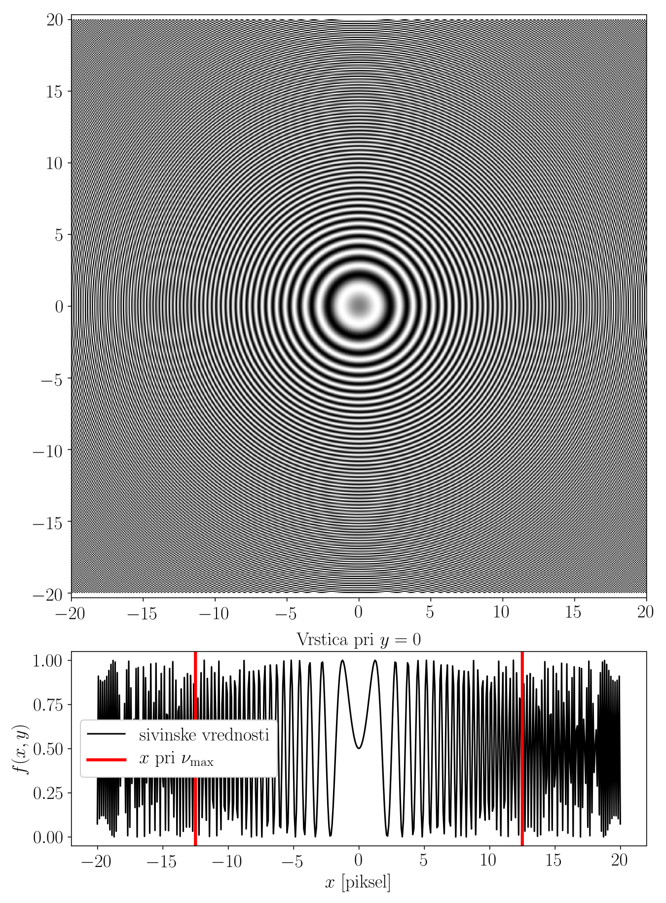

Enakomerno časovno vzorčenje in frekvenčno prekrivanje
Contents
import numpy as np
import matplotlib.pyplot as plt
7. Enakomerno časovno vzorčenje in frekvenčno prekrivanje¶
Pri procesiranju merjenih podatkov imamo opravka z diskretno vzorčenimi signali. Pomembno se je zavedati lastnosti procesa diskretizacije sicer zveznih časovnih signalov, katerih osnove si bomo pogledali na tej vaji.
7.1. Diskretizacija signalov¶
Diskretizacija je postopek, pri katerem v času zvezno sprmenljivko pretvorimo v diskretne vrednosti, primerne za predstavitev v računalniškem pomnilniku. Sestavljata jo dva ločena procesa, vzorčenje in kvantizacija.
7.1.1. Enakomerno časovno vzorčenje¶
Vzorčenje je postopek diskretizacije neodvisne spremenljivke (časa) zveznega procesa.
Glavni parameter časovnega vzorčenja je interval (perioda) vzorčenja, \(\Delta t\), ki definira frekvenco vzorčenja, \(f_s = 1 / \Delta t\).
Zvezni časovni signal tako vzorčimo pri diskretnih vrednostih časa \(n \, \Delta t\).
Note
Spomnimo se: Fourierova transformacija signala \(x(t)\), vzorčenega s periodo \(\Delta t\) je definirana kot vsota:
in je v frekvenčni domeni periodična s frekvenco \(1/\Delta t\):
7.1.2. Frekvenčno prekrivanje (aliasing)¶
Posledica periodičnosti Fourierove transformacije diskretnega signala je, da so frekvenčne komponente signla, višje od \(f_s/2\), zrcaljene preko meje \(f_s/2\) in povzročajo t. i. frekvenčno prekrivanje. To povzroča anomalije v diskretno vzorčenem signalu.
Frekvenco \(f_N = f_s / 2\) imenujemo tudi Nyquistova frekvenca.
Note
Pojav frekvenčnega prekrivanja je zanimivo opazovati na primeru digitalnih slik, kjer je neodvisna spremenljivka razdalja (višina, širina slike) in govorimo o prostorski frekvenci.

Naloga 1 (10 minut)
Za primer signala:
\(x(t) = X_1 \, \sin(2\pi \, f_1 \, t) + X_2 \, \cos(2\pi \, f_2 \, t)\)
simulirajte vzorčenje s z vzorčno frekvenco \(f_s\), nato pa še z vzorčno frekvenco \(f_s / 2\).
Prikažite obe časovni vrsti, s pomočjo izrisa amplitudnih spektrov obeh signalov pa komentirajte pojav frekvenčnega prekrivanja.
Podatki:
fs = 100
f_1 = 3
f_2 = 30
X_1 = 2
X_2 = 1.5


7.1.2.1. Filtriranje za odpravo frekvenčnega nalaganja¶
Frekvenčno nalaganje merjenega signala lahko preprečimo z uporabo nizkopasovnega filtriranja (ang. anti-aliasing filter), ki mora biti izvedeno pred časovnim vzorčenjem signala.
Naloga 2 (10 minut)
Na zgornjem primeru signala \(x(t)\) prikažimo uporabo anti-aliasing filtriranja z uporabo scipy.signal.
from scipy import signal
Priprava digitalnega nizkoprepustnega filtra:
f_cutoff = 20
sos = signal.butter(3, f_cutoff, 'low', analog=False, fs=fs, output='sos')
w, h = signal.sosfreqz(sos, freq, whole=False, fs=fs)
fig, ax = plt.subplots()
ax.plot(freq, 20*np.log10(np.abs(h)), c='k')
ax.axvline(f_cutoff, c='k')
ax2 = ax.twinx()
ax2.plot(freq, np.abs(X))
ax.set_xlabel('f [Hz]')
ax.set_ylabel('h(f) [dB]')
ax2.set_ylabel('X(f)')
C:\Users\Domen\AppData\Local\Temp/ipykernel_16132/1568578183.py:2: RuntimeWarning: divide by zero encountered in log10
ax.plot(freq, 20*np.log10(np.abs(h)), c='k')
Text(0, 0.5, 'X(f)')

Filtriranje signala
x_filtered = signal.sosfilt(sos, x)
x_f_2 = x_filtered[::2]
X_f = np.fft.rfft(x_filtered) / len(x_filtered)
X_f[1:] *= 2
X_f_2 = np.fft.rfft(x_f_2) / len(x_f_2)
X_f_2[1:] *= 2
fig, ax = plt.subplots()
ax.plot(freq, 20*np.log10(np.abs(h)), c='k')
ax.axvline(f_cutoff, c='k')
ax2 = ax.twinx()
ax2.plot(freq, np.abs(X), label='$f_s$')
ax2.plot(freq, np.abs(X_f), label='$f_s, filter$')
ax2.plot(freq_2, np.abs(X_f_2), label='$f_s/2, filter$')
ax2.axvline(x=fs_2 / 2, c='k', ls='--')
ax.set_xlabel('f [Hz]')
ax.set_ylabel('h(f) [dB]')
ax2.set_ylabel('X(f)')
ax2.legend();
C:\Users\Domen\AppData\Local\Temp/ipykernel_16132/1088635885.py:2: RuntimeWarning: divide by zero encountered in log10
ax.plot(freq, 20*np.log10(np.abs(h)), c='k')

7.1.3. Kvantizacija¶
Kvantizacija je postopek diskretizacije odvisne spremenljivke zveznega procesa \(x(t)\).
Glavni parameter časovnega vzorčenja je število diskretnih nivojev, ki jih odvisna spremenljivka pri procesu kvantizacije lahko zavzame, ki določa dinamični razpon (globino) procesa. Običajno je podano s številom bitov \(b\) AD pretvornika. Prav tako je pri tem pomembno območje kvanzizacije \(A = x_{\text{max}} - x_{\text{min}}\), ki določa interval možnih vrednosti neodvisne spremenljivke \(x \in [x_{\text{min}}, x_{\text{max}}]\).
Število diskretnih vrednosti kvantiziranega signala je:
Napako kvantizacije lahko modeliramo kot naključni šum normalne porazdelitve s standardno deviacijo:
Dinamični razpon meritve je določen z razmerjem med koristnim signalom in šumom (napako kvantizacije), SNR (Signal-Nosie Ratio):
(ob predpostavki \(\sigma_x = A/4\), da ne dosežemo mej dovoljenga intervala neodvisne spremenljivke).
Naloga 3 (10 minut)
Na primeru signala \(x(t)\) iz naloge 1 simulirajmo vpliv kvantizacije signala s parametri:
\(x \in [-20, 20]\\\) \(b = 6\)
adc_range = [-100, 100]
A = np.max(adc_range) - np.min(adc_range)
b = 6
std_e = (A/2**b) / np.sqrt(12)
std_x = A/4
SN = 10 * np.log10(std_x**2 / std_e**2)
SN
34.874212113594744
6*b - 1.25
34.75
def get_quantized(x, bits=6, adc_range=(-20, 20)):
"""
Kvantizacija signala `x` z izbranimi parametri (s predavanj).
"""
x2 = x.copy()
lo, hi = adc_range
x2[x<=lo] = lo
x2[x>=hi] = hi
delta = (hi - lo) / (2**(bits)-1)
qnt = lo + delta*np.floor((x2 - lo) / delta)
return qnt
Kvantiziran signal
x_kvantiziran = get_quantized(x, b, adc_range)
Signal s šumom
x_šum = x + np.random.randn(len(x))*std_e
plt.plot(t, x, label='x(t)')
plt.plot(t, x_šum, label='šum')
plt.plot(t, x_kvantiziran, '.-', label='po kvantizaciji')
plt.xlabel('t [s]')
plt.ylabel('x(t)')
plt.legend();

X_k = np.fft.rfft(x_kvantiziran) / len(x_kvantiziran)
X_k[1:] *= 2
X_šum = np.fft.rfft(x_šum) / len(x_šum)
X_šum[1:] *= 2
plt.plot(freq, np.abs(X), label='X(f)')
plt.plot(freq, np.abs(X_šum), label='šum')
plt.plot(freq, np.abs(X_k), label='po kvantizaciji')
plt.xlabel('f [Hz]')
plt.ylabel('X(f)')
plt.legend();

plt.semilogy(freq, np.abs(X), label='X(f)')
plt.semilogy(freq, np.abs(X_šum), label='šum')
plt.semilogy(freq, np.abs(X_k), label='po kvantizaciji')
plt.xlabel('f [Hz]')
plt.ylabel('X(f)')
plt.legend();

7.2. Domača naloga¶
Domača naloga
Z uporabo generatorja signalov in zajemnega sistema Arduino pripravite signal(e), s katerim boste demonstrirali v podatkih določeno lastnost diskretizacije signalov. Pri generiranju in zajemu signalov uporabite v podatkih predpisane parametre, manjkajoče parametre pa določite v skladu s predpisano lastnostjo diskretizacije.
Dodatek: Signal(e) pripravite tako, da boste lahko prikazali tudi drugo od obravnavanih lastnosti diskretizacije (časovno vzorčenje oz. kvantizacija). Tudi to na kratko komentirajte.
LabView program za zajem signalov lahko prenesete v obliki zip arhiva.
Da bo delo na generatorju signalov potekalo čimbolj učinkovito, lahko izbrane parametre signala in zajema najprej preizkusite z numerično simulacijo. Pomagajte si z zgornjimi primeri in modulom scipy.signal.
Pripravite kratko poročilo v okolju Jupyter Notebook (od 3 do 10 celic s kodo), v katerem naj bodo razvidni podatki naloge ter prikazan vpliv določene lastnosti diskretizacije s kratkimi komentarji, podprtimi s teoretičnimi izhodišči.
Poročilo oddajte tudi v .pdf obliki (glejte navodila za oddajo domačih nalog).